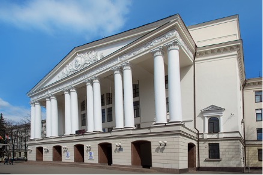

Национальный исследовательский университет «МЭИ»
Московский энергетический институт сегодня - один из крупнейших технических университетов России в области
энергетики, электротехники, электроники, информатики.
МЭИ готовит инженерные и научные кадры для иностранных государств начиная с 1946 года.
В настоящее время в МЭИ обучаются студенты и аспиранты из 68 стран мира.
За успехи в подготовке инженеров и научных кадров МЭИ награжден двумя государственными орденами и шестью орденами
зарубежных государств.
МЭИ является постоянным членом Международной ассоциации университетов, Международной ассоциации непрерывного
образования, Международного компьютерного клуба и Международной ассоциации энергетиков.

МЭИ располагает развитой инфраструктурой
- научно-исследовательскими лабораториями;
- специализированным опытным заводом;
- учебной теплоэлектроцентралью;
- учебным телецентром;
- учебным криогенным центром;
- вычислительным центром;
- сетью учебно-научных центров;
- специализированным студенческим конструкторским бюро;
- одной из крупнейших в стране научно-технической библиотекой.
К услугам студентов
- благоустроенные общежития;
- санаторий-профилакторий;
- столовые и кафе;
- Дом культуры МЭИ;
- радио МЭИ;
- Стадион "Энергия";
- физкультурные корпуса и спортивные залы;
- залы для занятий в секциях и спортивные площадки;
- теннисные корты;
- плавательный бассейн;
- лыжная база;
- тир;
- пункт проката спортивного инвентаря;
- студенческие оздоровительно-спортивные лагеря;
- многочисленные базы производственной практики.